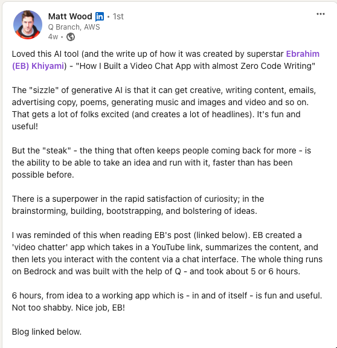

Gen-AI Video Chat App that Went Viral
A few months ago, I started learning about Generative AI. Despite everyone claiming to be an expert on social media, most of the content of the type “top AI tools that can do X” is not very helpful. It’s really hard to find a well-structured, academic-like course or content to walk you through this technology as a beginner. Since I work for AWS, I wanted to learn this technology from AWS’s perspective, so I started listening to a 7-hour course by my colleague on Generative AI and how it’s implemented using AWS services. The course was nice but too long, and I struggled to complete it, so I tried a different approach.
After understanding the basics of foundational models, how they work, and the main services that support them on AWS, I wanted to build something and learn by doing. The best thing to build is something that solves a real-world problem.
I started building an app that summarizes long YouTube videos, gives me a summary, and then builds a chat interface so that I can chat with the video content.
I wrote a blog post on how I did that, using Amazon Q and Amazon Bedrock as building blocks. I didn’t have to write the code from scratch because I wanted to learn Amazon Q’s capabilities as part of my experiment.
After releasing the app, I was surprised by the attention it received internally from AWS and from the community. It was publicly referenced by multiple VPs as a “master class in efficiency” in building a simple app using simple approaches. It was talked about by multiple community influencers, and I was invited multiple times to talk about it on podcasts. Since its release, the app has received 100k users.
Give it a try here: [Link to the app]
The blog post I published: [Link to the blog post]
Some social media references: [Links to social media references]
